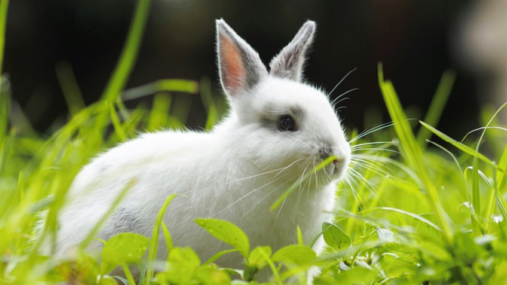
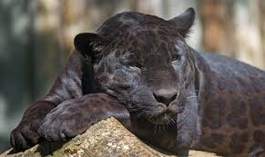

The same way an Eagle flies in high altitudes, I too fly in environments that of high standards... as the way an eagle is focused, I too I'm focused.
Gabriel Mungai
GitHub: @gabyjr19
Favorite Tech: Figma for design
Fun Fact: I love football and Messi!
Sweeny Mbuvi
GitHub: @sweenymbuvi
Favorite Tech: Python
Fun Fact: I don't eat red meat

I like rabbits because they reflect my gentle nature,
alertness to the world around me, and my love for quiet, cozy spaces where I at peace.
Nicole Angwenyi

I chose a Panther because it is calm, gentle, graceful in silence, precise in action, and cloaked in a mysterious strength that commands without asking, which is a reflection of my inner self.
GitHub: @Nicoleangwenyi
Favorite Tech: Kotlin
Fun Fact: A certified dog mum
Fun Fact 2: A certified cat mum